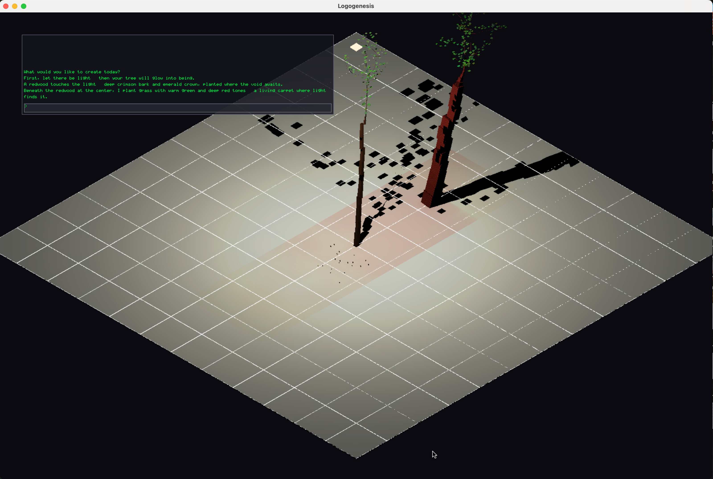
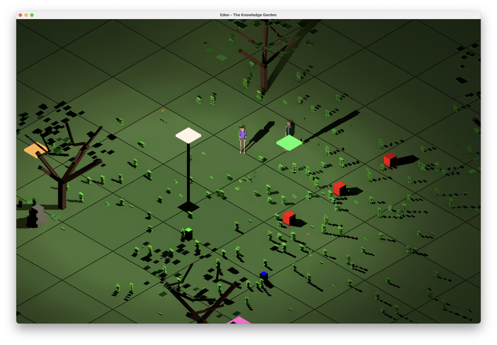
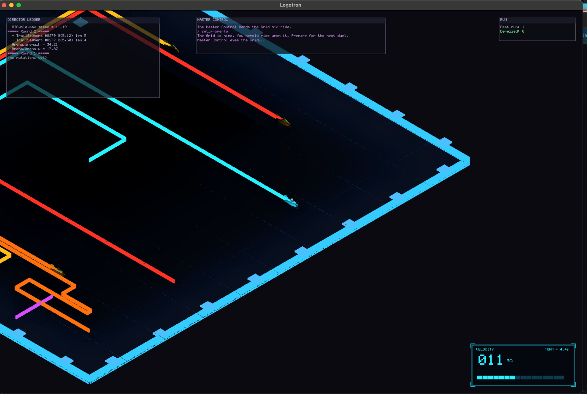

Walls, creatures, trees, fire, water. All particles. Every particle is a node in a queryable knowledge graph. That graph is the surface a language model writes to, so a model can author objects, context, gameplay and the opponent AI itself.
Most "AI in games" stops at dialogue. Here the language model, remote API or a local server on your own machine, writes typed operations against the knowledge graph: create an entity, destroy one, set a property, wire a relation. The engine validates each op against the ontology and applies it. Objects, context, gameplay rules and the opposing AI are all in reach.
Spawn a hazard, retune an opponent's top speed, shrink the arena, rewrite a relation mid-match. The same vocabulary covers all of it.
Every op is checked against declared types, properties and ranges. Invalid proposals are rejected with a readable reason instead of corrupting the world.
Add Wormhole to the schema and the model can build one.
Capabilities grow by editing YAML, not by shipping a new parser.
No OpenGL, no Vulkan, no DirectX. Software rasterization into a direct framebuffer, with Metal compute shaders carrying shadow rays and lighting through a BVH. Physics is XPBD, solved against the same particle data the renderer draws. One representation, not two.
No triangle meshes. Spheres and boxes carrying real mass and density. Physics and rendering read the same buffers.
Deferred lighting, all lights in a single compute pass, BVH ray traversal for shadows and ambient occlusion.
Damage, capabilities, interactions and state changes travel the graph and a typed event bus, not per-system bookkeeping.

Speak a world into being. Type a wish; an LLM authors validated knowledge-graph operations and the engine grows real trees, earth, and sky.

A mythological tableau that exercises the graph and capability stack end to end. Eva, the Tree, the Apple, the Serpent: each a particle, each a typed node with relations.

Light-cycle arena with an LLM Director. Beat the AI and the model designs the next opponent, sometimes mutating the arena mid-match. Every trail segment is a new node.
Logosphere began as the final project for a degree at the Universitat Oberta de Catalunya. The scope was a particle renderer with physics. What kept pulling it forward was the question underneath: if every object in a world is a node in a graph, how much of that world can a language model be handed the keys to?
It has since grown well past the original brief, into an engine with a typed event bus, capability aggregation, declarative physics interaction, ontology-driven extension and two playable examples.
Particles, ray-traced light, physics.
Every particle became a typed node. Systems started talking through relations instead of through each other.
A validated op vocabulary over the graph. Local or hosted, the model edits the world itself.
Free to read, build, and ship. A 5% royalty applies only after a product earns $100K lifetime gross.